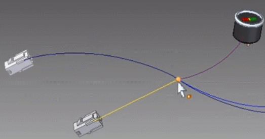
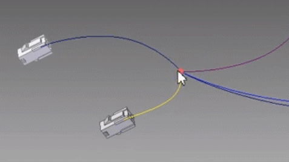

Working with Solid Edge Wiring and Harness Design
Solid Edge Wiring and Harness Design consists of Solid Edge Wiring Design and Solid Edge Harness Design.
Solid Edge Wiring Design is useful when creating wiring diagrams that outline the wiring connections between components. These diagrams also help validate the design by using electrical simulations, such as short circuits, voltage drops, and wiring size errors.
Solid Edge Wiring Design features and benefits include:
-
Rapid circuit design.
-
Electrical design and validation.
-
Automatic cross-referencing for multi-sheet parts and wires.
-
Customizable drawing styles.
-
Automated report generation.
-
Built-in libraries for such things as components and symbols.
-
Electrical simulations for short circuits, voltage drops, and wire sizing errors.
-
Close integration with Solid Edge Harness Design for wiring data exchange.
Solid Edge Harness Design is useful when creating a graphical layout of the wires within the harness.
Solid Edge Harness Design features and benefits include:
-
Rapid graphical layout and engineering of harness and form board designs.
-
Automatic part selection of terminals, seals, and connectors.
-
Automatic harness report generation, including BOMs and cutting lists.
-
Wire length calculations, which include terminal and connector add-on or knock-off values.
-
Automated generation of connector, wire, and splice tables.
For more information on Solid Edge Wiring and Harness Design, see the help delivered with the Solid Edge Wiring and Harness Design application.
Configuring network properties for Solid Edge and Solid Edge Wiring and Harness Design
Before exchanging data between Solid Edge and Solid Edge Wiring and Harness Design, you must configure the network properties for both products. These properties specify the location of Solid Edge Wiring and Harness Design, which can reside on the same machine as Solid Edge or on a remote machine.
To configure network properties:
Initializing connected mode
After configuring the network properties for Solid Edge and Solid Edge Wiring and Harness Design, you are ready to enter connected mode, which provides file-less data exchange between Solid Edge and Solid Edge Wiring and Harness Design, and helps keep the data in sync.
To connect Solid Edge with Solid Edge Wiring and Harness Design:
-
In Electrical Routing, click Home→Electrical→Connect
 .
. -
In Solid Edge Wiring and Harness Design, click the Workflow→Solid Edge Connect
 .
.
While in connected mode, the Connected Mode Log Viewer pane displays actions and information about the transactions between Solid Edge and Solid Edge Wiring and Harness Design. To clear the log pane, right-click in the pane and then click Clear. The log files are stored in the <user>/AppData/Local/Temp folder.
In connected mode, you can:
Exchanging wiring information between Solid Edge and Solid Edge Wiring and Harness Design
In addition to the CMP/CON format, the X2ML format can also be used in connected mode for the data exchange between Solid Edge and Solid Edge Wiring and Harness Design.
Exchanging harness topology information between Solid Edge and Solid Edge Wiring and Harness Design
You can export electrical harness topology data from Solid Edge to HX2ML format and then import the data into Solid Edge Wiring and Harness Design in either connected or disconnected mode. This enables ECAD customers to easily exchange data between Solid Edge Wiring and Harness Design and Solid Edge Electrical Routing.
Several optional properties can be exported from Solid Edge for bundles, connectors, nonelectrical components, and splices. These include properties such as, Bend radius, Diameter, Name, Part number, Start and End points, and Length.
In addition to these optional properties, there are three mandatory properties that you must define in Solid Edge to ensure successful import into Solid Edge Electrical:
-
Connector Type
-
Device Type
-
Fixing Type
After you specify the harness-related properties in Solid Edge and the HX2ML information is imported into Solid Edge Harness Design, the harness drawing is automatically generated.
Preparing for harness topology exchange
Before exchanging the harness topology information, we recommend preparing the harness in Solid Edge by doing the following:
- Route wires and cables through bundles
-
Route all wires and cables through bundles because information for components that are connected to wires and cables not included in a bundle is not included in the harness exchange.
- Assign values to user-defined properties needed for HX2ML
-
The HX2ML file used in the harness exchange requires some properties that are not present by default in Solid Edge. These properties are created for the respective Solid Edge objects by reading the se_harness_hx2ml.txt file, which should be placed in the $:\Program Files\Siemens\Solid Edge 2021\Preferences folder.
Note:If the file is not present in the proper location, the HX2ML file will be created with only the attributes it can retrieve.
- Specify the node reference/position of the splice on the bundle
-
In Solid Edge you cannot create a splice on wires contained in a bundle without splitting the bundle. Solid Edge Wiring and Harness Design does support such cases by merging the bundles which have the same shared node at the ends of the adjacent bundles. In this case, the splice position sent from Solid Edge is always at the start and end positions of the adjacent bundles.
In Solid Edge Wiring and Harness Design, you can merge two bundles if the following is true:
-
The diameters and maximum diameters are the same for both.
-
The bend radius is the same for both.
-
Both bundles have either unique user-defined properties or all common user properties are the same.
-
Exchanging harness topology data in connected mode
To exchange harness topology data in connected mode:
-
After you prepare the harness in Solid Edge, open Solid Edge Wiring and Harness Design.
-
In Solid Edge Wiring and Harness Design, click the Workflow→Configure
 .
. -
On the Connection Properties dialog box, enter the appropriate Port name for the Remote Application and Local Application.
-
In Solid Edge Electrical Routing, click Home→Electrical→Connect
.A log viewer displays actions and information about the transactions between Solid Edge and Solid Edge Wiring and Harness Design.
-
In Solid Edge Wiring and Harness Design, click the Workflow→Solid Edge Connect
. -
In Solid Edge Wiring and Harness Design, click Workflow→Bridge In to display the 2D representation of harness topology created in Solid Edge.
Exchanging harness topology data in disconnected mode
To exchange harness topology data in disconnected mode:
-
In Solid Edge, after you prepare the harness, click File→Save As→Save As ECAD.
-
On the Save As ECAD dialog box, set Document to Siemens - Solid Edge Electrical - Harness Topology and then click OK.
-
On the Save as - Harness topology dialog box, specify a name and location for the .xml file and then click Save.
You are now ready to import the harness information into Solid Edge Wiring and Harness Design.
-
In Solid Edge Wiring and Harness Design, click Workflow→Bridge In.
-
On the File Open dialog box, use the Browse button to locate and select the .xml file and then click Open.
The .xml file is imported and the harness preview displays the 2D representation of the harness design.
-
Click Process to create the harness drawing.
Adding splices during data exchange
If you import data from Solid Edge Wiring and Harness Design that contain splices, the splices are automatically created in Solid Edge Harness Design.
Splices are created at the midpoint between the first two available components to which it connects to the wires.

After the splice position is known, the other wires that connect to it are routed to the splice. Afterward, you can move the splice to the appropriate position.

After you place the splice, you can edit it. You can also use the Assign Terminals dialog box to change the terminal name.
Splices are considered to be components and they also support terminals. Because splices are considered to be components, splice attributes specify information about the splices in the .cmp file. To differentiate splices from other components, set the Component type attribute to 1. Other splice attributes include Splice terminals, Splice diameter, and Splice Material. Wires are now specified by splice terminal instead of splice name in the .con file.
When imported, the splice entry is shown in blue in the harness wizard. You can use the harness wizard to apply the additional attributes to the splice.
How do I
Configure Solid Edge connection propertiesConnect to Solid Edge Wiring and Harness Design for data exchange
Update the harness design to match Solid Edge Wiring and Harness Design
Cross select objects between Solid Edge and Solid Edge Wiring and Harness Design
Reject harness design updates
Look up more details
Configure commandConnection Properties dialog box
Connect command
Update Harness command
Assign Occurrence/Component dialog box
Cross Select command
Reject command